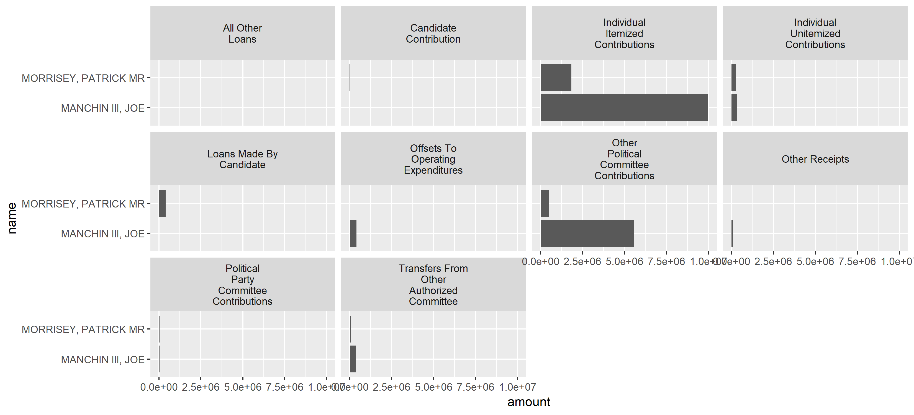

tidyusafec is an R package for accessing campaign finance data through the Federal Election Commission’s OpenFEC API. It depends on having R installed (windows | mac), and suggests you also install the integrated development environment RStudio if you are just beginning with R. tidyusafec is an independent open source project under MIT license maintained by Stephen Holzman. It is not affiliated with or endorsed by the FEC or any of the other software projects mentioned.
0. Ethics and/or Warning
Do your due diligence before publishing data gathered with tidyusafec. While this package eases the technical burden of working with FEC data, it does not do anything to expedite understanding the different products.
This package is still young. As the package author, I’m still double or triple checking numbers with other sources to make sure the numbers I think I have and the numbers I actually have are the same. Even then FEC data has some quirks.
In this early stage, please report unexpected package behavior in an issue on GitHub.
1. Installing
Depending on where R packages are hosted, you can install them from inside R with functions. Use install.packages to get the devtools package from CRAN. Use install_github to get tidyusafec from the Github repository.
install.packages("devtools")
devtools::install_github("stephenholzman/tidyusafec")Load packages:
library(tidyverse)
library(tidyusafec)2. API Key
tidyusafec makes it easy to send requests to the FEC website’s API for data. Some of the functions can realistically trigger thousands of requests spread out over several minutes. Check your email for an API key and substitute it for YOUR_API_KEY inside these quotes:
save_datagov_apikey(key = "YOUR_API_KEY")Running this saves the API Key on your machine so tidyusafec functions can use it automatically.
By default, the FEC limits individuals to 1000 requests every hour. This is probably enough for general use like:
200 candidate-by-election searches leading to 800 requests for an individual candidate’s financial totals per hour
100,000 itemized contributions per hour.
If you see yourself going over that limit, you can send APIinfo@fec.gov a request for their 120 calls per minute upgrade.
3. Start With a Search
search_candidates is the most common way to begin an analysis. An example search might look like:
wv_senate <- search_candidates(state = "WV",
election_year = "2018",
office = "S",
unnest_committees = TRUE)| load_date | last_file_date | candidate_id | election_years | party | candidate_status | office_full | state | federal_funds_flag | has_raised_funds | office | election_districts | name | district_number | cycles | incumbent_challenge | party_full | first_file_date | active_through | incumbent_challenge_full | last_f2_date | district | committee_id | committee_name | treasurer_name | earliest_cycle | latest_cycle | earliest_election_year | latest_election_year |
|---|---|---|---|---|---|---|---|---|---|---|---|---|---|---|---|---|---|---|---|---|---|---|---|---|---|---|---|---|
| 2018-02-22T21:14:12 | 2017-12-01 | S8WV00150 | list(2018) | REP | C | Senate | WV | FALSE | TRUE | S | list(“00”) | BLANKENSHIP, DON | 0 | list(2018) | C | REPUBLICAN PARTY | 2017-12-01 | 2018 | Challenger | 2017-12-01 | 00 | C00662445 | DON BLANKENSHIP FOR U.S. SENATE | BLANKENSHIP, PAULA | 2018 | 2018 | 2018 | 2018 |
| 2018-02-17T09:16:20 | 2017-07-12 | S8WV00135 | list(2018) | REP | N | Senate | WV | FALSE | FALSE | S | list(“00”) | COPLEY, JIMMY DALE II | 0 | list(2018) | C | REPUBLICAN PARTY | 2017-07-12 | 2018 | Challenger | 2017-07-12 | 00 | NA | NA | NA | NA | NA | 2018 | 2018 |
| 2018-02-17T09:16:20 | 2017-05-09 | S8WV00127 | list(2018) | REP | C | Senate | WV | FALSE | TRUE | S | list(“00”) | JENKINS, EVAN H | 0 | list(2018) | C | REPUBLICAN PARTY | 2017-05-09 | 2018 | Challenger | 2017-05-09 | 00 | C00548271 | JENKINS FOR SENATE | KILGORE, PAUL A | 2014 | 2018 | 2018 | 2018 |
| 2018-04-20T21:11:18 | 2018-04-12 | S0WV00090 | list(2010, 2012, 2018) | DEM | C | Senate | WV | FALSE | TRUE | S | list(“00”, “00”, “00”) | MANCHIN III, JOE | 0 | list(2010, 2012, 2014, 2016, 2018) | I | DEMOCRATIC PARTY | 2010-07-22 | 2018 | Incumbent | 2018-04-12 | 00 | C00486563 | MANCHIN FOR WEST VIRGINIA | JACK ROSSI | 2010 | 2018 | 2010 | 2018 |
| 2018-04-24T21:15:20 | 2018-04-17 | S8WV00143 | list(2018) | REP | C | Senate | WV | FALSE | TRUE | S | list(“00”) | MORRISEY, PATRICK MR | 0 | list(2018) | C | REPUBLICAN PARTY | 2017-07-17 | 2018 | Challenger | 2018-04-17 | 00 | C00651075 | MORRISEY FOR SENATE INC | CRATE, BRADLEY MR | 2018 | 2018 | 2018 | 2018 |
| 2018-03-30T21:07:47 | NA | S8WV00168 | list(2018) | REP | N | Senate | WV | FALSE | FALSE | S | list(“00”) | NEWBROUGH, JACK | 0 | list(2018) | C | REPUBLICAN PARTY | NA | 2018 | Challenger | NA | 00 | NA | NA | NA | NA | NA | 2018 | 2018 |
| 2018-02-17T09:16:20 | 2018-02-03 | S8WV00119 | list(2018) | DEM | C | Senate | WV | FALSE | TRUE | S | list(“00”) | SWEARENGIN, PAULA JEAN | 0 | list(2018) | C | DEMOCRATIC PARTY | 2017-05-08 | 2018 | Challenger | 2018-02-03 | 00 | C00640219 | PAULA SWEARENGIN 2018 | TERI DALTON | 2018 | 2018 | 2018 | 2018 |
| 2018-03-30T21:07:47 | NA | S8WV00176 | list(2018) | REP | N | Senate | WV | FALSE | FALSE | S | list(“00”) | WILLIS, THOMAS (TOM) | 0 | list(2018) | C | REPUBLICAN PARTY | NA | 2018 | Challenger | NA | 00 | NA | NA | NA | NA | NA | 2018 | 2018 |
Each row returned by search_candidates when unnest_committees = TRUE contains a unique candidate_id + committee_id pair. Candidates just getting started or not raising money may have no committee_id, some candidates may have multiple rows if they changed principal committees for different elections, and most will have one pair. Use unnest_committees = FALSE if you would prefer to keep committee information in a non-tidy list column.
candidate_status is a notable column to filter on and be aware of. It goes by FEC status according to records filed and processed, not necessarily what candidates have announced about their intentions.
Some filter strategies are below, or you could use search_candidates better when you know exactly what you are looking for.
#Just select candidates.
wv_senate %>%
filter(str_detect(name, "MANCHIN|MORRISEY"))
#Candidates who are still current as far as the FEC knows.
wv_senate %>%
filter(candidate_status == "C")
#An alternative search if we know we only want current candidates from the start.
wv_senate <- search_candidates(state = "WV",
election_year = "2018",
office = "S",
candidate_status = "C")4. Get Financial Data
The results of search_candidates can be piped (using %>%) into one of the appropriate functions that begin with a get_ prefix.
Start by getting financial totals for each candidate.
wv_senate_totals <- wv_senate %>%
get_candidate_totals()| candidate_id | coverage_start_date | full_election | coverage_end_date | last_report_year | cycle | last_report_type_full | last_beginning_image_number | type_of_funds | amount | load_date | last_file_date | election_years | party | candidate_status | office_full | state | federal_funds_flag | has_raised_funds | office | election_districts | name | district_number | cycles | incumbent_challenge | party_full | first_file_date | active_through | incumbent_challenge_full | last_f2_date | district | committee_id | committee_name | treasurer_name | earliest_cycle | latest_cycle | earliest_election_year | latest_election_year |
|---|---|---|---|---|---|---|---|---|---|---|---|---|---|---|---|---|---|---|---|---|---|---|---|---|---|---|---|---|---|---|---|---|---|---|---|---|---|
| S8WV00150 | 2017-11-28T00:00:00+00:00 | TRUE | 2018-04-18T00:00:00+00:00 | 2018 | 2018 | PRE-PRIMARY | 201804260200360060 | loan_repayments | 0 | 2018-02-22T21:14:12 | 2017-12-01 | list(2018) | REP | C | Senate | WV | FALSE | TRUE | S | list(“00”) | BLANKENSHIP, DON | 0 | list(2018) | C | REPUBLICAN PARTY | 2017-12-01 | 2018 | Challenger | 2017-12-01 | 00 | C00662445 | DON BLANKENSHIP FOR U.S. SENATE | BLANKENSHIP, PAULA | 2018 | 2018 | 2018 | 2018 |
| S8WV00127 | 2017-01-01T00:00:00+00:00 | TRUE | 2018-04-18T00:00:00+00:00 | 2018 | 2018 | PRE-PRIMARY | 201804260200360145 | loan_repayments | 0 | 2018-02-17T09:16:20 | 2017-05-09 | list(2018) | REP | C | Senate | WV | FALSE | TRUE | S | list(“00”) | JENKINS, EVAN H | 0 | list(2018) | C | REPUBLICAN PARTY | 2017-05-09 | 2018 | Challenger | 2017-05-09 | 00 | C00548271 | JENKINS FOR SENATE | KILGORE, PAUL A | 2014 | 2018 | 2018 | 2018 |
| S0WV00090 | 2013-01-01T00:00:00+00:00 | TRUE | 2018-04-18T00:00:00+00:00 | 2018 | 2018 | PRE-PRIMARY | 201804260200359877 | loan_repayments | 0 | 2018-04-20T21:11:18 | 2018-04-12 | list(2010, 2012, 2018) | DEM | C | Senate | WV | FALSE | TRUE | S | list(“00”, “00”, “00”) | MANCHIN III, JOE | 0 | list(2010, 2012, 2014, 2016, 2018) | I | DEMOCRATIC PARTY | 2010-07-22 | 2018 | Incumbent | 2018-04-12 | 00 | C00486563 | MANCHIN FOR WEST VIRGINIA | JACK ROSSI | 2010 | 2018 | 2010 | 2018 |
| S0WV00090 | 2011-01-01T00:00:00+00:00 | TRUE | 2012-12-31T00:00:00+00:00 | 2012 | 2012 | YEAR-END | 13020044250 | loan_repayments | 0 | 2018-04-20T21:11:18 | 2018-04-12 | list(2010, 2012, 2018) | DEM | C | Senate | WV | FALSE | TRUE | S | list(“00”, “00”, “00”) | MANCHIN III, JOE | 0 | list(2010, 2012, 2014, 2016, 2018) | I | DEMOCRATIC PARTY | 2010-07-22 | 2018 | Incumbent | 2018-04-12 | 00 | C00486563 | MANCHIN FOR WEST VIRGINIA | JACK ROSSI | 2010 | 2018 | 2010 | 2018 |
| S0WV00090 | 2010-07-20T00:00:00+00:00 | TRUE | 2010-12-31T00:00:00+00:00 | 2010 | 2010 | YEAR-END | 11020020070 | loan_repayments | 0 | 2018-04-20T21:11:18 | 2018-04-12 | list(2010, 2012, 2018) | DEM | C | Senate | WV | FALSE | TRUE | S | list(“00”, “00”, “00”) | MANCHIN III, JOE | 0 | list(2010, 2012, 2014, 2016, 2018) | I | DEMOCRATIC PARTY | 2010-07-22 | 2018 | Incumbent | 2018-04-12 | 00 | C00486563 | MANCHIN FOR WEST VIRGINIA | JACK ROSSI | 2010 | 2018 | 2010 | 2018 |
| S8WV00143 | 2017-07-01T00:00:00+00:00 | TRUE | 2018-04-18T00:00:00+00:00 | 2018 | 2018 | PRE-PRIMARY | 201804260200359778 | loan_repayments | 0 | 2018-04-24T21:15:20 | 2018-04-17 | list(2018) | REP | C | Senate | WV | FALSE | TRUE | S | list(“00”) | MORRISEY, PATRICK MR | 0 | list(2018) | C | REPUBLICAN PARTY | 2017-07-17 | 2018 | Challenger | 2018-04-17 | 00 | C00651075 | MORRISEY FOR SENATE INC | CRATE, BRADLEY MR | 2018 | 2018 | 2018 | 2018 |
| S8WV00119 | 2017-05-14T00:00:00+00:00 | TRUE | 2018-04-18T00:00:00+00:00 | 2018 | 2018 | PRE-PRIMARY | 201805080200366081 | loan_repayments | 0 | 2018-02-17T09:16:20 | 2018-02-03 | list(2018) | DEM | C | Senate | WV | FALSE | TRUE | S | list(“00”) | SWEARENGIN, PAULA JEAN | 0 | list(2018) | C | DEMOCRATIC PARTY | 2017-05-08 | 2018 | Challenger | 2018-02-03 | 00 | C00640219 | PAULA SWEARENGIN 2018 | TERI DALTON | 2018 | 2018 | 2018 | 2018 |
| S8WV00150 | 2017-11-28T00:00:00+00:00 | TRUE | 2018-04-18T00:00:00+00:00 | 2018 | 2018 | PRE-PRIMARY | 201804260200360060 | last_net_operating_expenditures | 1046651 | 2018-02-22T21:14:12 | 2017-12-01 | list(2018) | REP | C | Senate | WV | FALSE | TRUE | S | list(“00”) | BLANKENSHIP, DON | 0 | list(2018) | C | REPUBLICAN PARTY | 2017-12-01 | 2018 | Challenger | 2017-12-01 | 00 | C00662445 | DON BLANKENSHIP FOR U.S. SENATE | BLANKENSHIP, PAULA | 2018 | 2018 | 2018 | 2018 |
| S8WV00127 | 2017-01-01T00:00:00+00:00 | TRUE | 2018-04-18T00:00:00+00:00 | 2018 | 2018 | PRE-PRIMARY | 201804260200360145 | last_net_operating_expenditures | 562043 | 2018-02-17T09:16:20 | 2017-05-09 | list(2018) | REP | C | Senate | WV | FALSE | TRUE | S | list(“00”) | JENKINS, EVAN H | 0 | list(2018) | C | REPUBLICAN PARTY | 2017-05-09 | 2018 | Challenger | 2017-05-09 | 00 | C00548271 | JENKINS FOR SENATE | KILGORE, PAUL A | 2014 | 2018 | 2018 | 2018 |
| S0WV00090 | 2013-01-01T00:00:00+00:00 | TRUE | 2018-04-18T00:00:00+00:00 | 2018 | 2018 | PRE-PRIMARY | 201804260200359877 | last_net_operating_expenditures | 313028 | 2018-04-20T21:11:18 | 2018-04-12 | list(2010, 2012, 2018) | DEM | C | Senate | WV | FALSE | TRUE | S | list(“00”, “00”, “00”) | MANCHIN III, JOE | 0 | list(2010, 2012, 2014, 2016, 2018) | I | DEMOCRATIC PARTY | 2010-07-22 | 2018 | Incumbent | 2018-04-12 | 00 | C00486563 | MANCHIN FOR WEST VIRGINIA | JACK ROSSI | 2010 | 2018 | 2010 | 2018 |
| S0WV00090 | 2011-01-01T00:00:00+00:00 | TRUE | 2012-12-31T00:00:00+00:00 | 2012 | 2012 | YEAR-END | 13020044250 | last_net_operating_expenditures | -257664 | 2018-04-20T21:11:18 | 2018-04-12 | list(2010, 2012, 2018) | DEM | C | Senate | WV | FALSE | TRUE | S | list(“00”, “00”, “00”) | MANCHIN III, JOE | 0 | list(2010, 2012, 2014, 2016, 2018) | I | DEMOCRATIC PARTY | 2010-07-22 | 2018 | Incumbent | 2018-04-12 | 00 | C00486563 | MANCHIN FOR WEST VIRGINIA | JACK ROSSI | 2010 | 2018 | 2010 | 2018 |
| S0WV00090 | 2010-07-20T00:00:00+00:00 | TRUE | 2010-12-31T00:00:00+00:00 | 2010 | 2010 | YEAR-END | 11020020070 | last_net_operating_expenditures | 72401 | 2018-04-20T21:11:18 | 2018-04-12 | list(2010, 2012, 2018) | DEM | C | Senate | WV | FALSE | TRUE | S | list(“00”, “00”, “00”) | MANCHIN III, JOE | 0 | list(2010, 2012, 2014, 2016, 2018) | I | DEMOCRATIC PARTY | 2010-07-22 | 2018 | Incumbent | 2018-04-12 | 00 | C00486563 | MANCHIN FOR WEST VIRGINIA | JACK ROSSI | 2010 | 2018 | 2010 | 2018 |
| S8WV00143 | 2017-07-01T00:00:00+00:00 | TRUE | 2018-04-18T00:00:00+00:00 | 2018 | 2018 | PRE-PRIMARY | 201804260200359778 | last_net_operating_expenditures | 554720 | 2018-04-24T21:15:20 | 2018-04-17 | list(2018) | REP | C | Senate | WV | FALSE | TRUE | S | list(“00”) | MORRISEY, PATRICK MR | 0 | list(2018) | C | REPUBLICAN PARTY | 2017-07-17 | 2018 | Challenger | 2018-04-17 | 00 | C00651075 | MORRISEY FOR SENATE INC | CRATE, BRADLEY MR | 2018 | 2018 | 2018 | 2018 |
| S8WV00119 | 2017-05-14T00:00:00+00:00 | TRUE | 2018-04-18T00:00:00+00:00 | 2018 | 2018 | PRE-PRIMARY | 201805080200366081 | last_net_operating_expenditures | 14217 | 2018-02-17T09:16:20 | 2018-02-03 | list(2018) | DEM | C | Senate | WV | FALSE | TRUE | S | list(“00”) | SWEARENGIN, PAULA JEAN | 0 | list(2018) | C | DEMOCRATIC PARTY | 2017-05-08 | 2018 | Challenger | 2018-02-03 | 00 | C00640219 | PAULA SWEARENGIN 2018 | TERI DALTON | 2018 | 2018 | 2018 | 2018 |
| S8WV00150 | 2017-11-28T00:00:00+00:00 | TRUE | 2018-04-18T00:00:00+00:00 | 2018 | 2018 | PRE-PRIMARY | 201804260200360060 | transfers_from_other_authorized_committee | 0 | 2018-02-22T21:14:12 | 2017-12-01 | list(2018) | REP | C | Senate | WV | FALSE | TRUE | S | list(“00”) | BLANKENSHIP, DON | 0 | list(2018) | C | REPUBLICAN PARTY | 2017-12-01 | 2018 | Challenger | 2017-12-01 | 00 | C00662445 | DON BLANKENSHIP FOR U.S. SENATE | BLANKENSHIP, PAULA | 2018 | 2018 | 2018 | 2018 |
| S8WV00127 | 2017-01-01T00:00:00+00:00 | TRUE | 2018-04-18T00:00:00+00:00 | 2018 | 2018 | PRE-PRIMARY | 201804260200360145 | transfers_from_other_authorized_committee | 0 | 2018-02-17T09:16:20 | 2017-05-09 | list(2018) | REP | C | Senate | WV | FALSE | TRUE | S | list(“00”) | JENKINS, EVAN H | 0 | list(2018) | C | REPUBLICAN PARTY | 2017-05-09 | 2018 | Challenger | 2017-05-09 | 00 | C00548271 | JENKINS FOR SENATE | KILGORE, PAUL A | 2014 | 2018 | 2018 | 2018 |
| S0WV00090 | 2013-01-01T00:00:00+00:00 | TRUE | 2018-04-18T00:00:00+00:00 | 2018 | 2018 | PRE-PRIMARY | 201804260200359877 | transfers_from_other_authorized_committee | 264342 | 2018-04-20T21:11:18 | 2018-04-12 | list(2010, 2012, 2018) | DEM | C | Senate | WV | FALSE | TRUE | S | list(“00”, “00”, “00”) | MANCHIN III, JOE | 0 | list(2010, 2012, 2014, 2016, 2018) | I | DEMOCRATIC PARTY | 2010-07-22 | 2018 | Incumbent | 2018-04-12 | 00 | C00486563 | MANCHIN FOR WEST VIRGINIA | JACK ROSSI | 2010 | 2018 | 2010 | 2018 |
| S0WV00090 | 2011-01-01T00:00:00+00:00 | TRUE | 2012-12-31T00:00:00+00:00 | 2012 | 2012 | YEAR-END | 13020044250 | transfers_from_other_authorized_committee | 29341 | 2018-04-20T21:11:18 | 2018-04-12 | list(2010, 2012, 2018) | DEM | C | Senate | WV | FALSE | TRUE | S | list(“00”, “00”, “00”) | MANCHIN III, JOE | 0 | list(2010, 2012, 2014, 2016, 2018) | I | DEMOCRATIC PARTY | 2010-07-22 | 2018 | Incumbent | 2018-04-12 | 00 | C00486563 | MANCHIN FOR WEST VIRGINIA | JACK ROSSI | 2010 | 2018 | 2010 | 2018 |
| S0WV00090 | 2010-07-20T00:00:00+00:00 | TRUE | 2010-12-31T00:00:00+00:00 | 2010 | 2010 | YEAR-END | 11020020070 | transfers_from_other_authorized_committee | 0 | 2018-04-20T21:11:18 | 2018-04-12 | list(2010, 2012, 2018) | DEM | C | Senate | WV | FALSE | TRUE | S | list(“00”, “00”, “00”) | MANCHIN III, JOE | 0 | list(2010, 2012, 2014, 2016, 2018) | I | DEMOCRATIC PARTY | 2010-07-22 | 2018 | Incumbent | 2018-04-12 | 00 | C00486563 | MANCHIN FOR WEST VIRGINIA | JACK ROSSI | 2010 | 2018 | 2010 | 2018 |
| S8WV00143 | 2017-07-01T00:00:00+00:00 | TRUE | 2018-04-18T00:00:00+00:00 | 2018 | 2018 | PRE-PRIMARY | 201804260200359778 | transfers_from_other_authorized_committee | 53031 | 2018-04-24T21:15:20 | 2018-04-17 | list(2018) | REP | C | Senate | WV | FALSE | TRUE | S | list(“00”) | MORRISEY, PATRICK MR | 0 | list(2018) | C | REPUBLICAN PARTY | 2017-07-17 | 2018 | Challenger | 2018-04-17 | 00 | C00651075 | MORRISEY FOR SENATE INC | CRATE, BRADLEY MR | 2018 | 2018 | 2018 | 2018 |
The tibbles returned by get_ functions are tidy (except for some list columns that remain while developing the package). This makes it possible to cleanly pipe results into existing tidyverse tools with minimal data wrangling.
wv_senate_totals %>%
filter(type_of_funds == "receipts",
cycle == 2018) %>%
ggplot() +
geom_bar(aes(x = name, y = amount), stat = "identity") +
coord_flip()
A list is available called tidyusafec_filters that contain useful vectors to filter on. For example:
wv_senate_totals %>%
filter(str_detect(name, "MANCHIN|MORRISEY"),
type_of_funds %in% tidyusafec_filters$candidate_totals$type_of_funds$receipts_smallest_components) %>%
mutate(type_of_funds = type_of_funds %>%
str_replace_all("_"," ") %>%
str_to_title()
) %>%
ggplot() +
geom_bar(aes(x = name, y = amount), stat = "identity") +
facet_wrap(~type_of_funds,labeller = label_wrap_gen(width=15)) +
coord_flip()